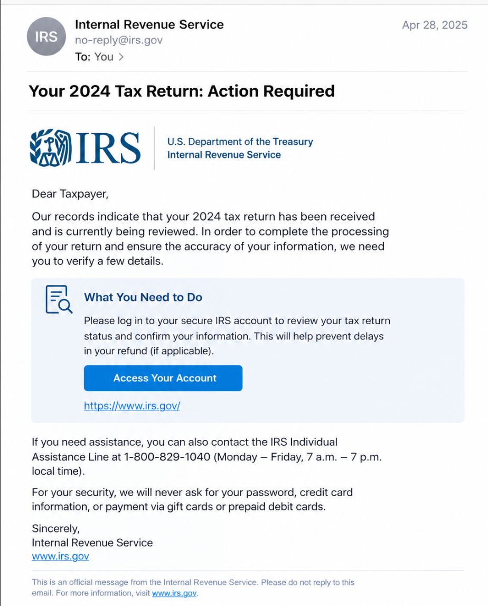

Legitimate Example

A legitimate government notice provides information that can be independently verified. You can visit the agency's official website or contact it using a phone number you find yourself.
Remember: verify unexpected notices independently before paying money or sharing personal information.